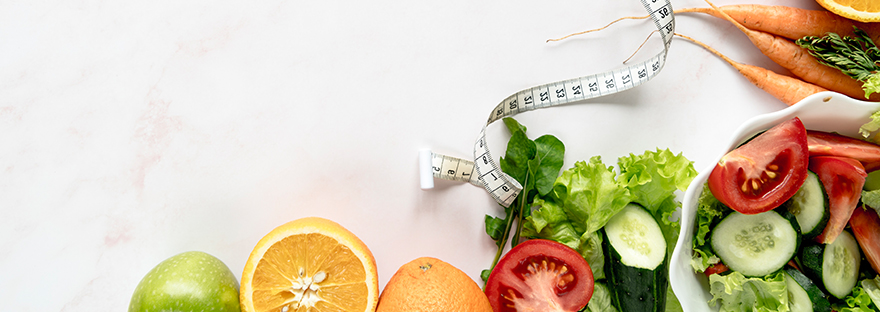

Mitos Alimentares do Fitness
11 de Junho de 2021
Alguns dos Mitos mais famosos
- Água com limão emagrece!
- Tapioca/crepioca é mais saudável e ajuda a emagrecer!
- Açúcar de côco é uma boa opção!
- Óleo de côco é mais saudável!
- Proteína é necessária para aumentar a massa muscular!
- Manteiga de amendoim ou creme de avelãs para dar sabor!
- Bowl de frutas como refeição adequada!
- Agave não engorda!
- Entre muitos outros… Os mitos à volta da nutrição nunca mais acabam…
Mas serão todos mitos? Ou estão só descontextualizados?
Mas será que é mesmo assim?
Cada vez mais estamos sujeitos a desinformação e descontextualização no que toca à nutrição. Todos falam muito, e às vezes com pouco conhecimento. Somos influenciados por famosos, pelos media… Mas até que ponto devemos seguir à risca aquilo que vemos ou lemos?
A verdade é que muitos destes lemas, não passam de truques que nos apresentam como mágicos mas sem qualquer validade científica. Outros estão apenas descontextualizados.
Qual o nosso conselho? Procure ajuda com quem percebe do assunto, ajuda especializada.
-
Água com limão emagrece??
-
Tapioca/crepioca é mais saudável e ajuda a emagrece
-
Açúcar de côco é uma boa opção??
-
Tapioca/crepioca é mais saudável e ajuda a emagrece??
-
Proteína é necessária para aumentar a massa muscular!
-
Manteiga de amendoim ou creme de avelãs para dar sabor!
-
Bowl de frutas como refeição!
-
Bowl de frutas como refeição!
A famosa dieta em que come tudo o que lhe apetecer mas se fizer a bendita água com limão em jejum, purifico de tal forma alma e organismo que não há gordura que lhe pegue… MITO!
A água com limão tem de facto benefícios, mas em muito pouco estão diretamente associados à perda de peso por si só. Deverá sim fazer parte de uma dieta estruturada e equilibrada, adaptada ao objetivo.
A água com limão em jejum, é uma forma de ajudar a hidratar o organismo depois de um longo período sem beber (noite), ajuda a fortalecer o sistema imunitário pelo teor de vitamina C (antioxidante e anti-inflamatório natural) e é baixa em açúcar comparativamente a outras frutas ou sumos de fruta.
A tapioca/crepioca, é nada mais nada menos do que farinha de mandioca usada para esse fim. Tal como usamos a aveia para fazer panquecas ou crepes. Mas, a mandioca é um tubérculo cujo índice glicémico é elevadíssimo… Então não tem muito interesse para quem quer emagrecer. O efeito será exatamente o oposto, se não houver os devidos cuidados alimentares.
É sim, uma opção mais saudável do que outras farinhas ou processados e fácil de usar, mas para quem precisa de energia imediata. Por exemplo um atleta. Não é a melhor opção para si que nos procurou para perder peso!
NUNCA! Açúcar é açúcar, ponto! Venha ele de onde vier.
Escusado será dizer, a quem faz este programa, que é um alimento super proibido. Enquanto consumimos açúcares de absorção rápida, não queimamos gordura.
Os açúcares permitidos no programa estão devidamente contabilizados e estão naturalmente presentes no alimento “in natura”.
Porque está na moda? Ou porque é importado?
Não há qualquer fundamento científico para ser considerada uma gordura saudável, quando em Portugal produzimos azeite. Muito mais saudável, muito mais barato e de produção nacional, fácil de encontrar de produção biológica.
O óleo de côco é uma gordura saturada! Nem sequer tem os benefícios que o azeite tem por ser uma gordura polinsaturada (a gordura boa). O azeite adquire assim propriedades anti inflamatórias.
No entanto, desde que não diariamente, pode ser usado para dar um aroma diferente aos seus pratos. Mas nunca se esqueça, 1g de gordura (seja ela qual for) são 9 kcal! Use com peso e medida!
Erradíssimo! A Massa muscular aumenta pelo esforço e pela nutrição adequada do músculo… esta não passa só por proteína… muito menos por pós mágicos ou batidos instantâneos.
Use sim, uma alimentação equilibrada, com proteína preferencialmente natural como o ovo, carne, peixe.
Basta olhar para a lista de ingredientes destas maravilhas, para perceber o “lixo” que está a comer!
E assim resumimos o assunto.
De facto é uma alegria quando juntamos as manteigas de frutos secos ao nosso dia. E hoje em dia já encontramos estas manteigas mais naturais, quase sem aditivos e sem açúcar. Mas, serão mesmo assim opção para quem quer emagrecer?
NÃO! Mais uma moda…
Não que não sejam opções saudáveis… mas são desadequadas para um processo de emagrecimento.
1 colher de sopa tem, aproximadamente, 90 kcal. Na sua maioria é gordura ou hidratos de carbono.
Não é difícil circular pelo instagram ou Facebook e deparar-nos com lindíssimas bowls de tudo e mais alguma coisa. Na sua maioria vêm apresentadas em taças feitas de casca de côco e dão realmente boas fotos de instagram… mas não passam disso.
Ora vejamos:
Várias peças de fruta (algumas delas bem ricas em açúcar), frutos secos, sementes, fruta desidratada, manteiga de amendoim, chocolate e decorada com florinhas…
Para perda de peso será tudo, menos uma refeição adequada.
Este último nunca nos ocorreu que pudesse ser entendido como um adoçante… E na verdade é encarado quase por todos como um adoçante… e usado para perda de peso… mas imagine: NÃO O É!
O xarope de agave, mais conhecido por agave, é um açúcar simples. Como tal, está altamente contraindicado na perda de peso.
Fica a dica, tudo o que tiver xarope no nome, é açúcar. Fuja!
O FITGYM contempla o que é necessário para obter resultados de forma saudável. Não invente! Siga as recomendações e perca peso facilmente, em segurança.